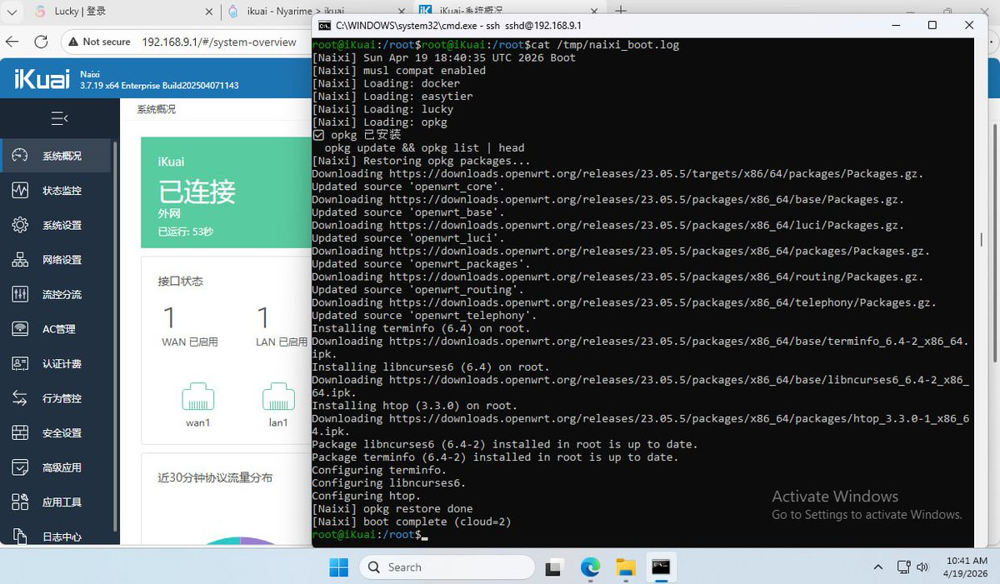
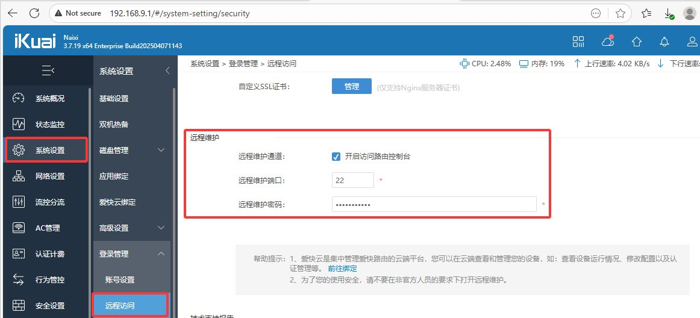
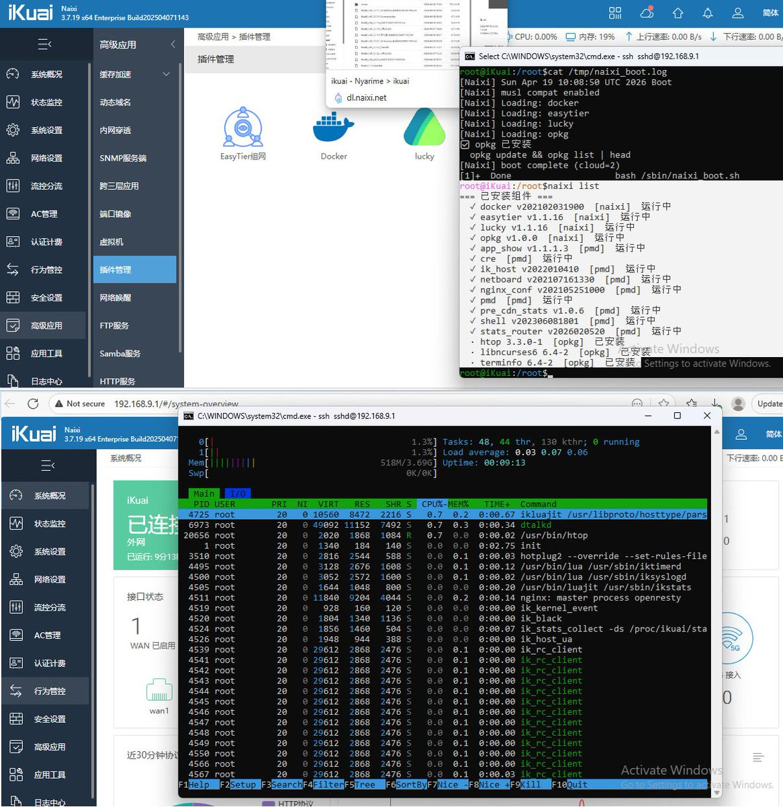
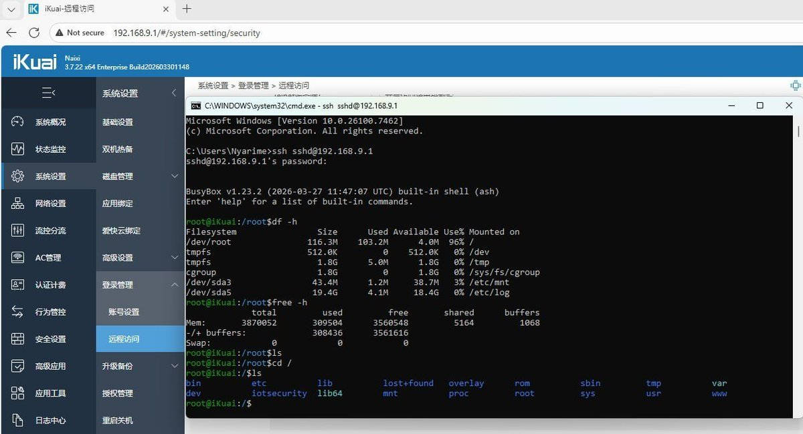
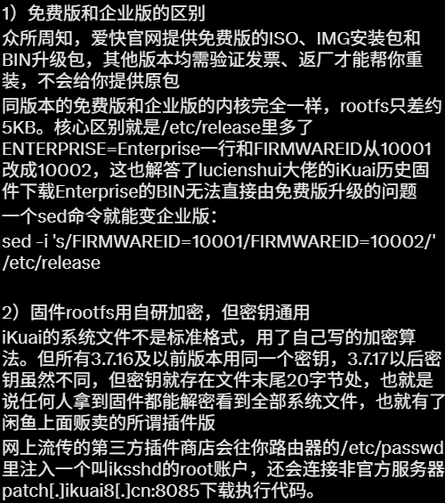
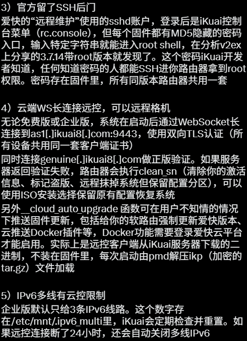

所以iKuai=OpenWrt？？？
又熬了一个通宵，爱快软路由可以跑OpenWrt软件包了，补了一个musl libc把持久化也做了
装任意iKuaiOS，然后升级v61v3.bin，再去图二开启访问路由控制台，就可以取得完整的root权限了
至于能扫到的后门都清理，模块默认带屏蔽云控，防格机也把上报那些都改掉了，应该算是比较干净的系统了

又熬了一个通宵，爱快软路由可以跑OpenWrt软件包了，补了一个musl libc把持久化也做了
装任意iKuaiOS，然后升级v61v3.bin，再去图二开启访问路由控制台，就可以取得完整的root权限了
至于能扫到的后门都清理，模块默认带屏蔽云控，防格机也把上报那些都改掉了，应该算是比较干净的系统了






熬了一通宵折腾爱快软路由，把iKuaiOS拆清楚了也提权了，希望对考虑买爱快OEM路由器的推友有点帮助
不过看折腾HomeLab的佬都喜欢这系统，除了简单、傻瓜化，感觉不如RouterOS。不过iKuai自己也写了包管理器pmd
理论来说静态编译的Go都能打包成插件在上面跑，例如弄个AdGuard https://t.co/9RHMx1GQrx
不过看折腾HomeLab的佬都喜欢这系统，除了简单、傻瓜化，感觉不如RouterOS。不过iKuai自己也写了包管理器pmd
理论来说静态编译的Go都能打包成插件在上面跑，例如弄个AdGuard https://t.co/9RHMx1GQrx